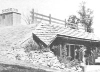

Earl and Freida Woods believe that earth-sheltered living can be just as economical as it is comfortable . . . and the simple house they've built in the mountains of eastern Tennessee is a case in point. Early in 1977, the pair-assisted by Freida's brother, who's in the construction business-broke ground and began to move tons of dirt to make room for their earth-sheltered dwelling.
The structure's walls consist of eight-inch cement blocks which were treated inside and out with Surewall surface-bonding compound. (Reinforcing rods were inserted in the blocks, and the remaining cavities were filled with cement.) Steel I-beams support the overhead, which consists of approximately five inches of concrete.
Only pressure-treated lumber was used in the frame of the building, and a handsome cedar-shingle roof shades the front entrance and patio. The insulating fill dirt on top of the house ranges in depth from about 2-1/2 feet near the front to a 10-foot layer at the rear. Since it faces south-southeast, the Woods earth shelter has an ideal exposure for collecting solar light and warmth (and that suits Freida's houseplants fine).
Inside, the 960-square-foot building contains three rooms (one of which is large enough to be partitioned into two separate living spaces). After Earl and Freida finished constructing the outside of the home-a job that took 2-1/2 years-they went on to complete the interior as time permitted. The house has an open fireplace at present, but the couple may install a coal- or woodburning stove later. A vent housed in the chimney covering recirculates the interior air, and the Tennesseans report that a comfortable indoor temperature is maintained in all weather.
With a final construction bill of around $10,000, this do-it-yourself underground dwelling proves-once again-that earth-sheltered living is a practical alternative. Earl and Frieda Woods are looking forward to a long, snug retirement in their handbuilt home.
|
 Photo by T. Harrington |
|
|